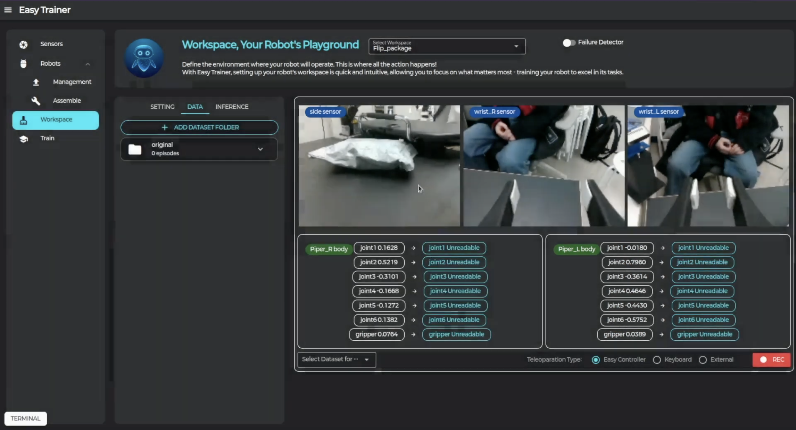
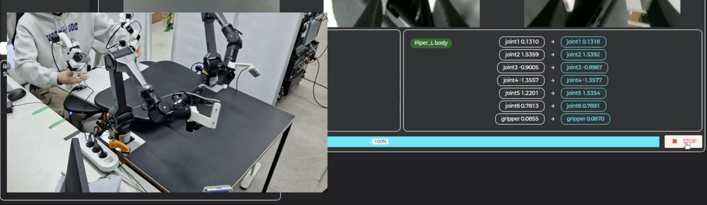

8 Data Collection
로봇 학습을 위한 데이터 수집 방법을 안내합니다.
💾 데이터 수집
로봇을 학습시키기 위해 반드시 필요한 데이터를 다음과 같이 쉽게 모을 수 있습니다.
-
1. 데이터셋 폴더 설정

Workspace 탭 → Data 탭에서 데이터를 저장할 폴더를 추가하거나 선택합니다. (좌측 하단의 "Select Dataset for..." 확인) -
2. 녹화 시작
우측 하단의 "REC" 버튼을 클릭합니다. -
3. 초기화
리더 로봇이 작업 로봇과 동일한 포즈로 이동합니다.
-
4. 데이터 저장

그리퍼를 닫으면 텔레오퍼레이션이 시작되며 데이터가 Workspace의 Episode length 길이동안 저장됩니다.
다양한 상황에서 여러 번 데이터를 수집할수록 로봇이 더 잘 학습됩니다. 최소 50개 이상의 에피소드를 수집하는 것을 권장합니다.